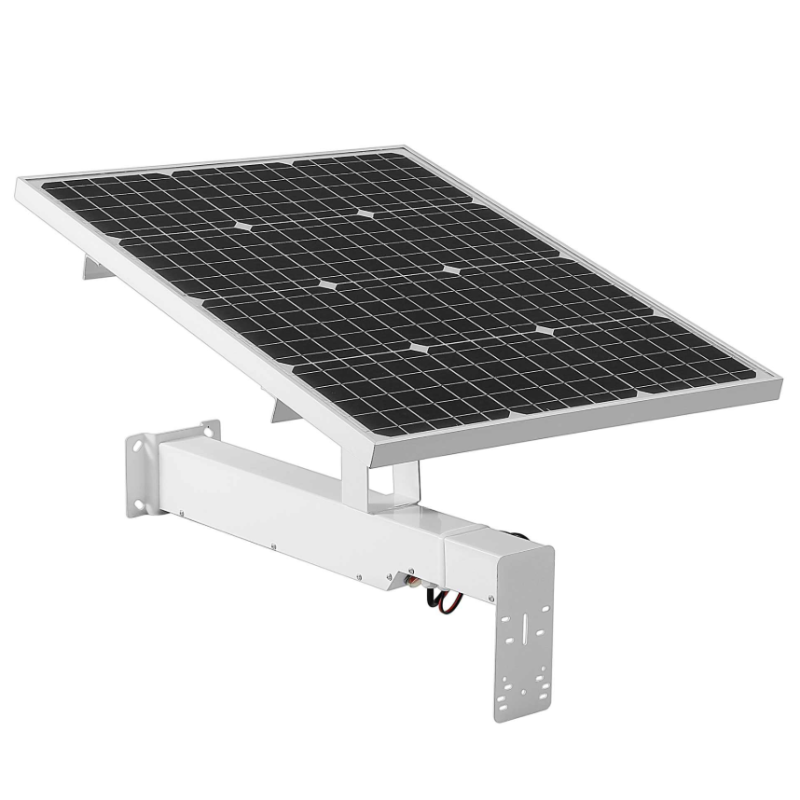

Hatásfoka:
A napelem hatásfok azt jelenti, hogy az adott napelem milyen hatékonysággal képes
a napfényt elektromos energiává átalakítani.
Ezt több tényező befolyásolja.
A földrajzi tényezők, az éghajlat,
az aktuális évszak és helyszínen lévő befolyásoló tényezők.
Ha egy közelben lévő fa árnyékot vet, akkor drasztikusan lecsökken
a teljesítménye a hagyományos rendszereknek,
hiszen az egyik napelem cella teljesítménye befolyásolja a többit.
A modern, smart rendszerek már optimalizálják a működést
és nem engedik, hogy a többi cella is kevesebbet termeljen.
Tartozékai:
- Alap rendszer
- Inverter
- Szerelvények tartozékok
- Akkumulátor
- Kábelek csatlakozók
- Monitorozó rendszer
Kinézete:
